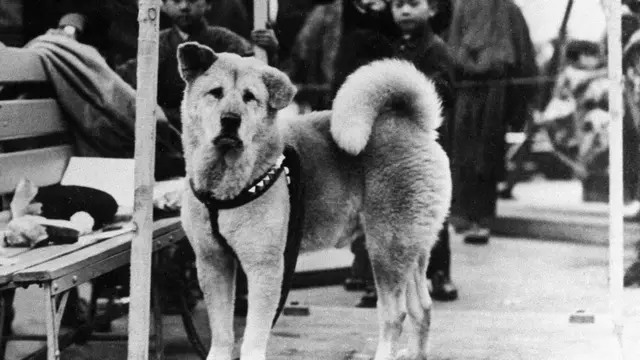
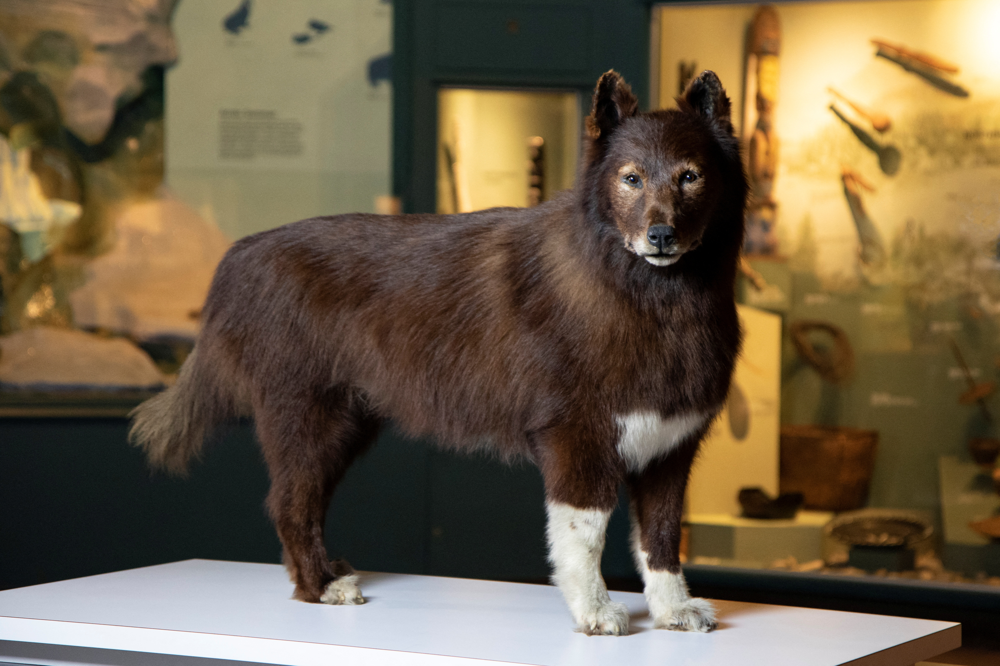
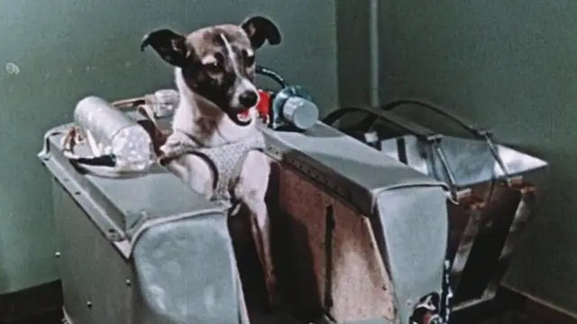
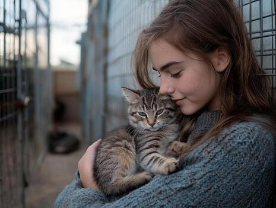
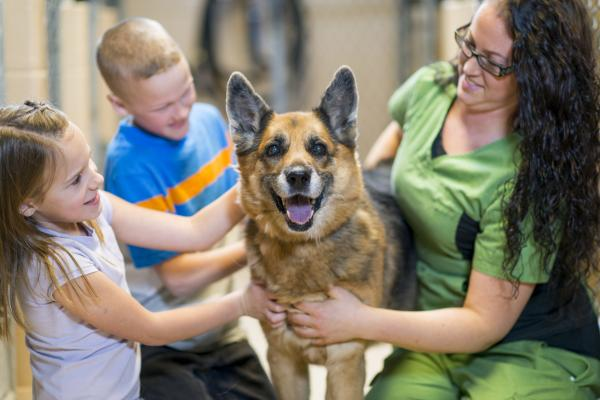

Historias que Inscriben el Corazón
Descubre los relatos de mascotas increíbles que han dejado una huella imborrable en la historia mundial y en las vidas de quienes decidieron abrirles su hogar.
Mascotas que Cambiaron la Historia

Hachiko: El Símbolo de Fidelidad
Durante más de nueve años, este fiel perro Akita esperó la llegada de su dueño en la estación de Shibuya, convirtiéndose en un ícono eterno de lealtad incondicional.

Balto: La Carrera del Suero
En 1925, Balto lideró una expedición de trineos en medio de tempestades heladas para entregar la medicina que salvó a la ciudad de Nome de una epidemia.

Laika: Pionera del Espacio
Una perrita rescatada de las calles que se convirtió en el primer ser vivo en orbitar la Tierra, abriendo el camino para la exploración del cosmos.
Historias de Adopción y Amor Real

Milo y Sofía
"Milo llegó en un momento difícil. Adoptarlo no solo salvó su vida, sino que llenó mi hogar de alegría y serenidad cada día."
Rescatado mediante Marcando Huellitas
Bruno y la Familia Gómez
"Pensábamos que estábamos dándole una oportunidad a Bruno, pero fue él quien nos enseñó el verdadero valor de la empatía."
Familia Marcando Huellitas¿Tu mascota ha marcado tu vida?
Comparte tu historia con la comunidad de Marcando Huellitas y aparece en nuestra web.